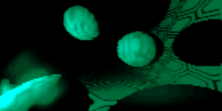

MFX / 1997
A DOS intro, brought to the browser
Abduction 1997 · 64k intro
gamma
MFX
MS-DOS · June 1997 · JavaScript port
Code / tracer
216
Design
216 · uncle-x · rainmaker
Maps
rainmaker
Music
utuist
Player
Cubic Team
Preparing…
Preparing original music…
Play
Stop
−15s
+15s
0:00 / 2:23
Fullscreen
Stats for geeks
←
→
Section
Loading sections…
Next frame
Restart
Mute
Stats for geeks
Waiting for a frame…
Loading…
Seeking…